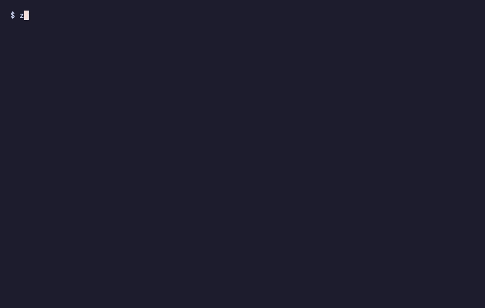
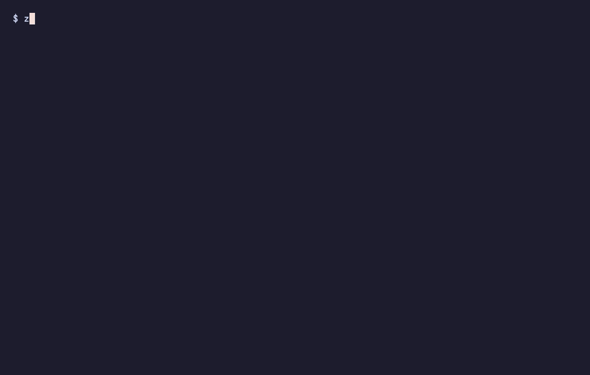
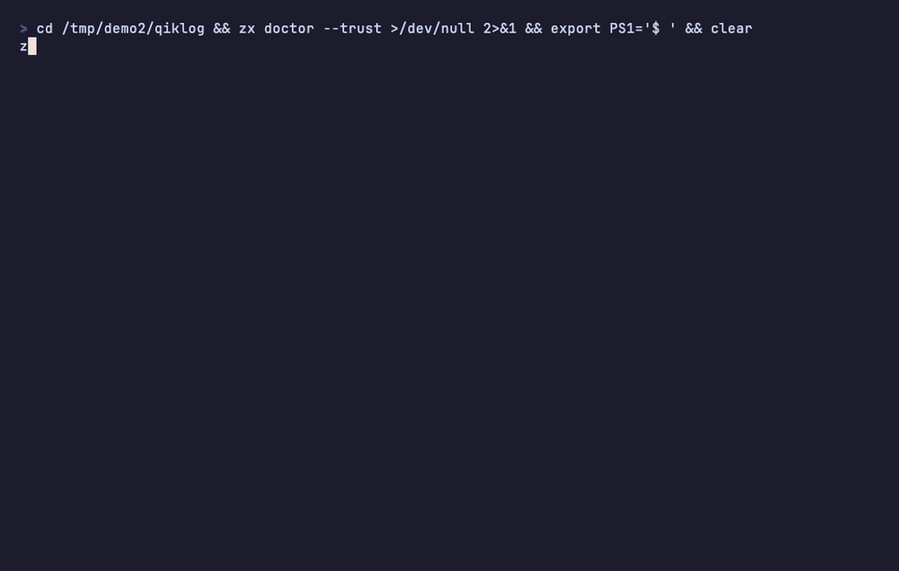

A stack of tools you must install,
Before a line of code can fall,
In this land of script-file sprawl,
One CLI takes that call:
One tool to rule them all,
One tool to find them,
zx will tame your daily crawl—
And with this tool, you bind them.
zx looks at a project, works out what it needs, shows what is missing and installs it. One small Go binary, no dependencies. It is also the toolbox you reach for every day.
The script checks the download against the release checksums. Prefer an installer? .pkg, .exe, .deb and .rpm are on the latest release.
Point it at any project. It finds the stacks, checks your machine against them, and fixes what is missing, asking first.
$ zx doctor --discover Looked at ~/dev/shop Found: laravel composer.json requires laravel/framework react (web/) package.json lists react docker docker-compose.yml Stack: laravel ok php 8.4.1 /usr/local/bin/php ok composer 2.8.3 /usr/local/bin/composer missing vendor not found missing .env not found Stack: react ok node 22.11.0 /usr/local/bin/node missing web/node_modules not found Suggested by AI missing redis-server not installed (docker-compose.yml runs redis) 5 of 12 checks need attention $ zx doctor --fix composer install, cp .env.example .env, cd web && npm install, brew install redis Run these commands? [y/N] y ... everything checks out

zx doctor checks the machine and skips project commands it has not been told it can trust.
zx doctor --trust shows every command in the project file, then remembers your approval.
zx doctor --fix shows the commands, asks once, then runs them and checks again.Name it, zx doctor laravel, or let zx look at the folder with zx doctor --discover. It reads the versions your project asks for.
Discovery needs no AI. If you want more, zx shows exactly which files it would send first, and keeps secrets out.
Every install command is shown first and nothing runs until you say yes. Works the same on macOS, Windows and Linux.
And the everyday chores. Every command takes arguments or a pipe, and every command can put its result on the clipboard with --copy.
$ zx guid 3f2b8c1e-9d47-4a6b-8e21-5c0f7a9d1b34 $ zx now 1700000000 # epoch → local, UTC and ISO time $ zx port 3000 -k # see what is on port 3000 and stop it $ curl -s api.example.com | zx json $ zx paste | zx json | zx clip # the clipboard as a pipe, same on every OS
Run zx alone to list them, zx help <command> for details. This list is read from the same manifest the binary embeds.
The command list loads from zxcli.json. It is also in the README.
Describe a chore. zx asks the AI you choose (Claude Code, Ollama, an Anthropic API key, or your own command) to write it as a script, shows it to you, and only then runs or saves it.
$ zx new "bump the version, update the readme, tag the repo" asking claude... ? Patch, minor or major by default? > patch zx bump Bump the version, update the README and tag the repo (sh, 31 lines) ------------------------------------------------------------ Save it as zx bump? [y/N] y saved .zx/commands/bump.sh $ zx "rename every .jpeg in this folder to .jpg" ...the script is shown first... Run it now? [y/N]
zx ai shows what is installed and remembers your pick for the machine or the project. Nothing is sent to a service you did not pick.
zx new saves and never runs. A sentence runs only after you say yes, every time.
Only your request, the file names in the folder and your command names are sent. File contents are not, and zx stores no keys.
A command is one file with one init(). That is the whole plug-in API.
// commands/guid.go func init() { core.Register("guid", runGuid) } func runGuid(c *core.Context) error { fs := c.Flags() n := fs.Int("n", 1, "how many to generate") pos, err := c.Parse(fs) // flags may come before or after positionals ... }
Zero entries in go.mod's require block: flag parsing, JSONC config, the HTTP server, the clipboard shim and the self-updater are all hand-built on the stdlib. One static binary per platform.
Commands are declared in zxcli.json, embedded with //go:embed, and a test fails the build if a registered command has no manifest entry or the reverse.
Built-ins, then project scripts (.zx/commands), user scripts, then any zx-<name> on PATH. Scripts can be .sh, .js, .ts, .py or .ps1, run with whatever is installed.
CI runs on Linux and Windows. A real Windows bug (Go's argument escaping mangling quoted shell lines for cmd.exe) was fixed with SysProcAttr.CmdLine and pinned with a cross-platform test.
zx doctor --fix shows every install command and asks first. Project-defined checks need a stored hash approval. Global launchers refuse names that are already programs or shell built-ins.
Tag a version and Actions builds archives, .deb/.rpm (nfpm), a Windows setup, and a macOS .pkg, with checksums. zx upgrade verifies them before replacing the binary.
Jamey McElveen — principal .NET architect with 30+ years of experience and a published technical author. zx started as a way to stop keeping a junk drawer of one-off scripts, and it is a working example of how I like to build: small pieces, tests alongside, and things that ship.